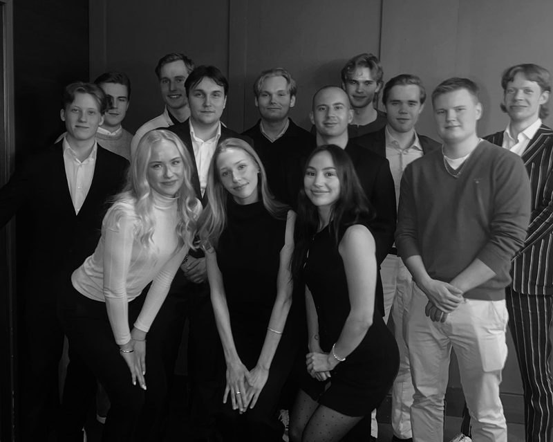
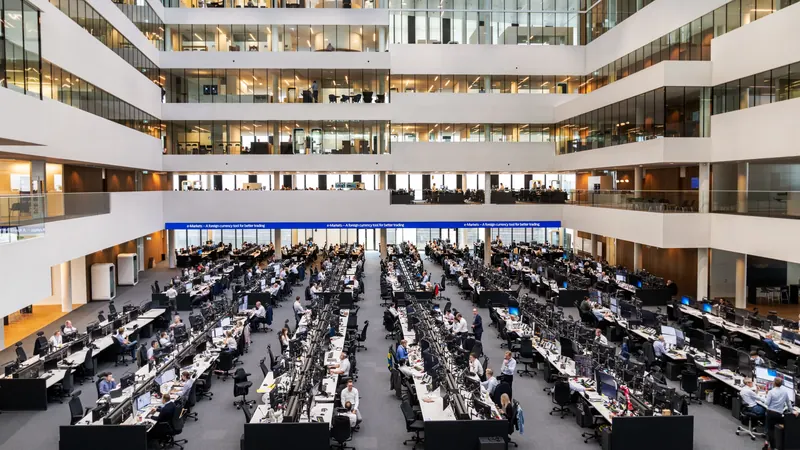
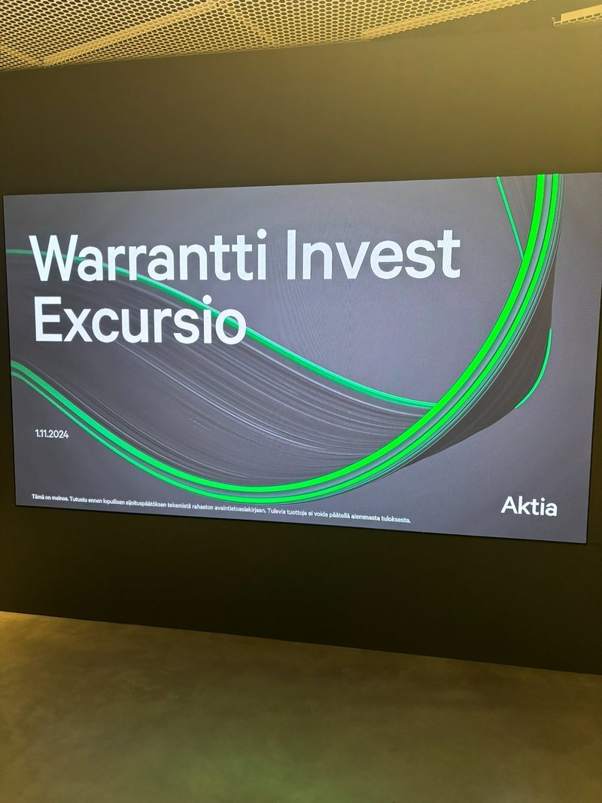
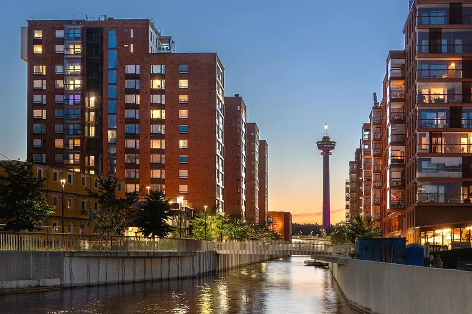

Winvest järjestää monipuolisia tapahtumia jäsenilleen — excursioista yritysvierailuihin, sijoitusiltamista vuosijuhliin. Täältä löydät tulevat tapahtumat sekä katsauksen menneisiin.
Tulevat tapahtumat
Excursio — Mandatum & Danske Bank
9.4.2026Vierailu Helsingissä kahteen keskeiseen rahoitusalan toimijaan. Mandatumilla käsitellään markkinanäkymiä sekä sijoitustuotteita (strukturoidut, korko ja vaihtoehtoiset sijoitukset).
Iltapäivällä Danske Bankilla tutustumme pankin Markets-toimintoihin, kuten Trade Financeen, Foreign Exchangeen, Equity Researchiin, Debt Capital Marketsiin sekä Corporate Lendingiin. Ohjelmaan kuuluu myös Markets-vierailu ja alumni-uratarinoita.

Menneet tapahtumat
Naistenpäivä x VES
testi 1
testi 2
Rookie Dinner 2026
testi 1
testi 2

Winvest Info Ilta
testi 1
testi 2
Rookie Dinner
testi 1
testi 2
Finance as Career Excursio
testi 1
testi 2
Naisten päivä x VES
7.3.2025
Naistenpäivän tapahtumassa puhujina olivat Laura Rahikka Hycamitelta ja Tuuli Prinkkilä Fintosista. He jakoivat ajatuksiaan yrittäjyydestä ja kertoivat omista urapoluistaan.
Excursio — Evli & Nordea
Kevään excursio Helsinkiin. Evlillä syvennyttiin varainhoidon ja pääomamarkkinoiden maailmaan. Nordealla kuultiin pankkitoiminnasta ja talouden tulevaisuuden näkymistä. Päivä huipentui verkostoitumiseen illallisen merkeissä.
Excursio — Vaasa
testi 1
testi 2

Kylterijäiset
testi 1
testi 2

Sijoittaja 2025 -messut, Helsinki
Warrantti Invest suuntasi Sijoittaja 2025 -messuille Helsingin Messukeskukseen tutustumaan sijoittamisen teemoihin, trendeihin ja ajankohtaiseen sisältöön. Tapahtuman virallinen Afterwork järjestettiin Cafe Solossa.
Institutional Trading and Markets
Winvestin entinen puheenjohtaja Kare Laine saapuu Vaasaan kertomaan meille työstään Nordea Marketsilla. Kare on työskennellyt osakeoptioiden markkinatakauksessa (Equity Derivatives Trading) sekä valuuttadeskillä (FX Sales). Tapahtumassa on kahvitarjoilut.

Finance as a Career
Alumnitapahtuma, jossa vieraana Nordean, BDO:n ja EY:n edustajat. He jakoivat urapolkujaan, kertoivat tyypillisestä työpäivästään ja antoivat vinkkejä opintoihin sekä työnhakuun. Tapahtuman tavoitteena oli auttaa opiskelijoita hahmottamaan, millaisia urapolkuja ja työmahdollisuuksia on tarjolla laskentatoimen ja rahoituksen aloilla.
Excursio — Helsinki
17.–18.4.2025
Kahden päivän excursiolla Helsinkiin pääsimme tutustumaan United Bankersiin, Danske Bankkiin sekä CapManiin. Luvassa oli myös illanviettoa porukalla, joten tekemistä riitti koko excun ajaksi!
Syksyn Excursio — Helsinki
Excursio Helsinkiin marraskuussa. Vierailimme Aktialla, jossa kuulimme pääekonomistin ajankohtaisen katsauksen talouteen, sekä Suomen Pankissa, jossa tutustuimme kultavarantoihin ja pankin toimintaan osana eurojärjestelmää. Päivä huipentui verkostoitumiseen illallisen merkeissä.

Winvest Excursio
testi 1
testi 2
Naistenpäivä — VES & Bloom by Johanna
8.3.2024
Naistenpäivää juhlittiin yhdessä VES:in ja Bloom by Johannan kanssa! Tapahtuman puhujina olivat kauneusalan verkkokauppa Bloom by Johannan perustanut Johanna Tähtinen sekä naisyrittäjyyttä paljon tutkinut Sami Vähämaa. Illan ohjelmaan kuului myös tarjoiluja, musiikkia ja yhteistä hengailua naistenpäivän kunniaksi.
Teemailta: Kryptovaluutat — Coinmotion
Teemailta kryptovaluutoista Coinmotionin Partner Manager Pessi Peuran kanssa. Coinmotion on Pohjoismaiden johtava kryptovaluuttojen palveluntarjoaja, joka keskittyy kryptovaluuttojen vaihtoon, säilytykseen ja varainhoitoon. Yrityksellä on yli 120 000 asiakasta, ja se on perustettu vuonna 2012.
Teemailta: Asuntosijoittaminen
Teemailta asuntosijoittamisesta alumnimme, Suomen vuokranantajat ry:n ekonomistin Eemeli Karlssonin johdattelemana. Eemeli kertoi asuntosijoittamisesta ja asuntomarkkinoista sekä uramahdollisuuksista valmistumisen jälkeen.
